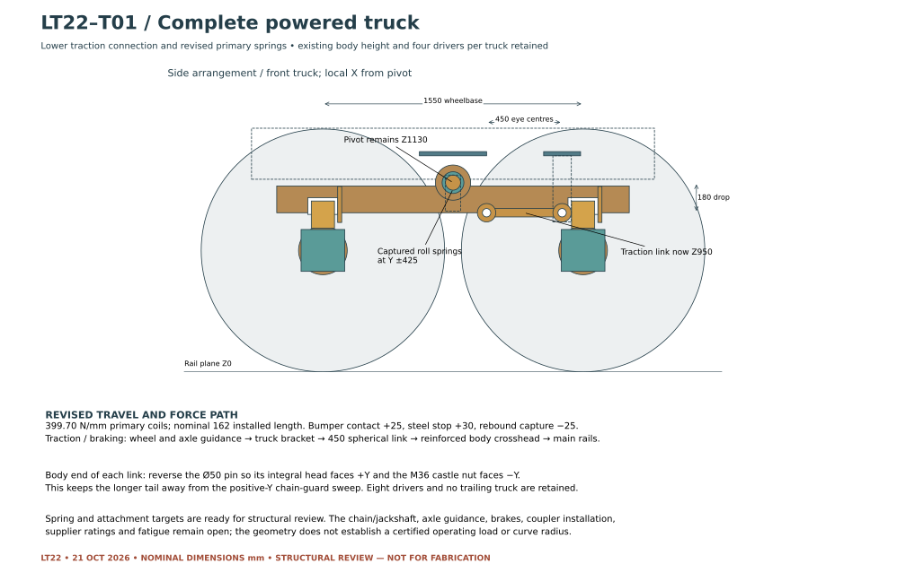
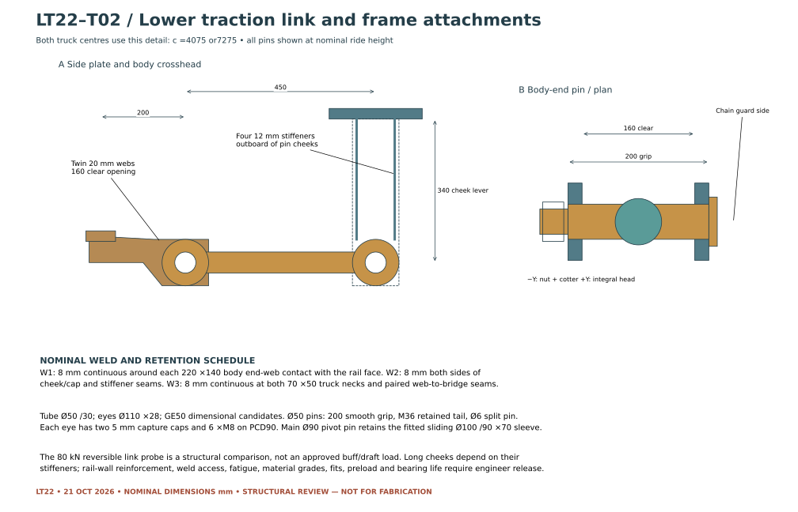
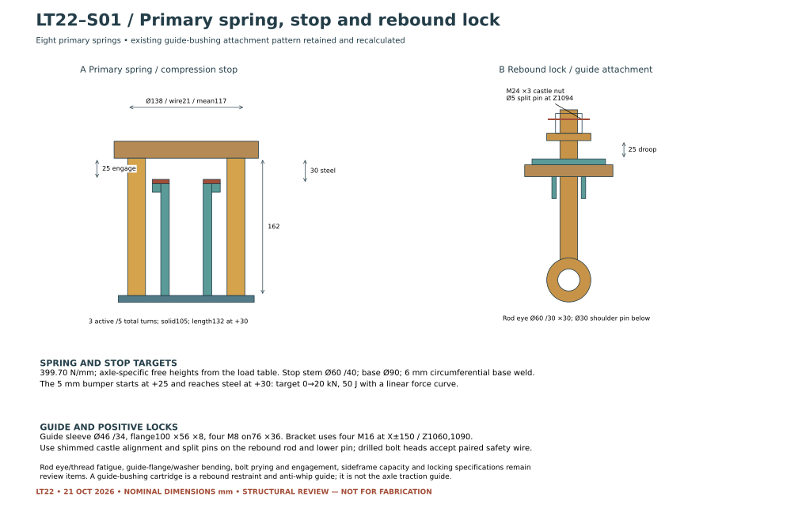

LT22 · LOADS, CONNECTIONS & SUSPENSION · OCTOBER 21, 2026
More travel.
A lower traction connection.
The revised truck connects to the existing eight-driver locomotive through a lower traction link, with firmer primary springs and additional travel. The load study now follows the actual two-motor layout and distinguishes distributed braking from loss of coach braking.
72 of 72 normal study cases stayed within travel. These are conditional traction and distributed-braking calculations using unmeasured mass budgets. They do not establish brake capacity, adhesion, an operating speed or fabrication approval.
20 of 148 total scenarios reached a modeled limit. Coach-brake-loss cases still require resolution. The two-motor proposal also falls short of several assumed loaded-train launch demands; its gearing, displacement and pressure setting need a matched drivetrain review.
One complete powered truck
Revised arrangement

Frame connections and positive retention
The 450 mm traction link remains separate from the sliding main pivot. Its body-end pin is reversed so the shorter integral head faces the chain guard. The deeper body crosshead gains four stiffeners, with a nominal weld schedule and gross-section calculations for review.

Springs, stops and rebound attachments
The primary spring uses the existing 162 mm installed space with three active turns and axle-specific free heights. The compression stop is shortened by 5 mm; the rebound washer, nut and locking hole move up 5 mm. Existing flanged guide-bushing mounts and positive pin locks are retained and recalculated.

What the comparison changed
Five options were checked against the same 24-case comparison. Lowering the link alone was insufficient. The combined change improved the result from 7 to 21 cases within travel, including challenging coach-brake-loss demands.

Review evidence
31 sampled positions: 0 rigid, 0 wheel-disk and 0 spring-envelope intersections. The set includes both hands of a 30 m curve, full travel samples, axle-roll samples and eight positions derived from the load study. These are sampled geometric checks, not a continuous swept-volume or track-running approval.